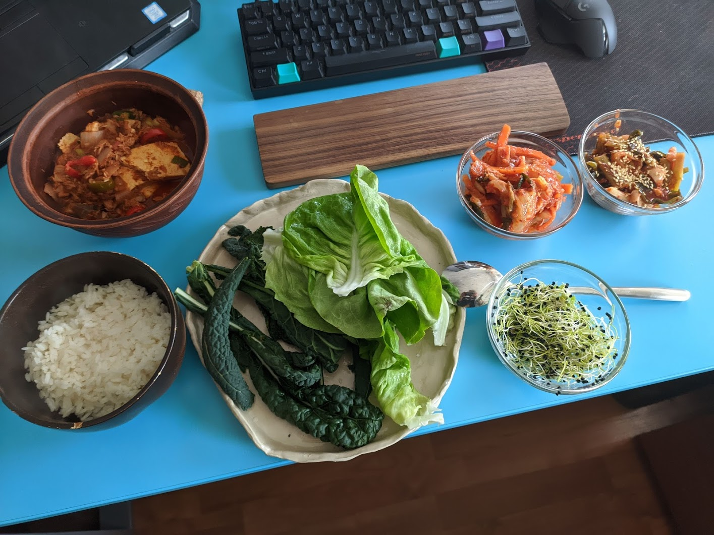

So, after hearing a lot about colinafarms and their weekly (or bi-monthly) crate, I was like... I love crates and surprises, why the heck not!
I put an order for 75 ron every two weeks kind of package and today I received my very first package. What I got was 1kg of potatoes, 2 pcs celeriac, 4 packs of kale, 100g of rucola, 1 pack of spring onions, 1 piece green salad.
Indeed it does feel quite expensive, 75 ron for this much, BUT! it's good. Like, you can feel the taste of the green onions depending on where you buy them from. When I ordered from Bringo (Carrefour) some green onions they had quite an unpleasant taste, and it wasn't a one-time pot of bad luck, but it became a habit. Those spring onions from colina remind me of the onions that my grandma grew, they're delicious. Anyways, I cut the stems and shoved them in a box with dirt, I'll grow some on my own as well, cheaper.
I filled myself a bowl of leaves and I munched on them like a rabbit, I feel like the green salad and rucola work with anything. One bite of food, a mouthful of leaves.
Tomorrow I plan on making some chamchi jjigae (spicy tuna stew) and some rice, pack everything in some of the leaves and enjoy the hell out of it. I might blanch the kale, because it's quite hard, but I don't think the green salad needs any blanching. The stew is very easy to make, but you'll need gochujang (some sweet spicy chilli paste), which can be found at TasteOfAsia (Cluj) or iwok.ro. You might find other shops, better price, you know.
But all in all, is it worth it? 75 ron for 15 ron worth of veggies (non-bio, normal)? Eh. If you've got the money, definitely! They came to me green and lively, unlike the ones I find in the supermarket, lacking of life. Also, to mention, I'm not going to the market cause I don't really leave my house, lol.
I'll update more if I think there's any need to do so, until then, see ya!
UPDATE: I made a pic of the salad and the stew 